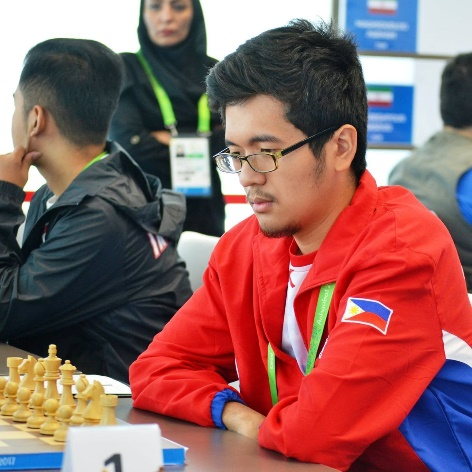

Player Information
Full Name: Paulo Bersamina
Started Playing Chess: 4 years old
Hometown: Pasay City
Skills/Talents other than chess: Creating and Editing YouTube Videos
Affiliation to any other group/team: Member of Caloocan Loadmanna Knights (team in Professional Chess Association of the Philippines)
Chess Title: International Master
Talent and perseverance. These are the two fundamental ingredients that allowed International Master Paulo Bersamina to fulfill his destiny as one of the world-renowned Filipinos in the game of chess, even breaking Wesley So’s record as Philippines’ Youngest National Junior Champion when he was only 12 years old.
His chess story began at the tender age of four with his father serving as his very first coach. After a year, Paulo was ready to join his first competition. In his first international tournament at 8 years old, the chess prodigy was able to bring home two gold medals. From then onwards the only way for the young genius was up, slaying opponents left and right during his high school and college years both locally and internationally. His efforts bore fruits in the form of silver and bronze medals in the Asian Indoor and Martial Arts Games (2017), 4-time UAAP MVP, 3-time UAAP Champion in college and 3-time NCAA MVP, 3-time NCAA Champion in high school. Prior to the pandemic, he was also a consistent medalist in the ASEAN Age Group Chess Championships held annually.
11th ASEAN+ AGE GROUP CHAMPIONSHIPS 2010 STANDARD CHESS - OPEN 12
13th ASEAN+ AGE-GROUP CHESS CHAMPIONSHIPS 2012 STANDARD CHESS - OPEN 14
14th ASEAN+ AGE-GROUP CHESS CHAMPIONSHIPS 2013 BLITZ CHESS - OPEN 16
Discipline is the virtue that guides the virtuoso to reach incredible heights in the world of chess. His daily routine is composed of two hours solving chess puzzles, two hours playing or practicing chess, one hour studying openings, and one hour studying strategic concepts or endgame.
Before becoming a member of the Philippine National Chess Team, Paulo struggled financially. Through his own merits, he was accepted in the highly prestigious organization. He pointed out three pivotal tournaments that allowed him to be endorsed in the aforementioned chess team.
“When I was 12, I broke Wesley So’s Record of being the Youngest National Junior Champion of our country. I also gained the National Master title in that tournament. Later that year, I won 6 gold medals in ASEAN Age Group Chess Championships that was held in Subic and it gave me the FIDE Master title. After that I won a silver medal in Asian Youth Chess Championships which was held in Beijing. These three tournaments were the reason I was endorsed to the National Team and luckily, I was accepted. This all happened in 2010, and ever since I was never removed.”
Apart from the prestige of bearing the Philippine flag in international tournaments, Paulo mentioned that the best parts of being a national player are the monthly allowance, the quarterly National Team uniform supplies and Philippine Sports Commission (PSC) shouldering the expenses for his overseas competitions.
Like any other sport, issues are also present in chess. Globally, one of the obstacles is quick-draws which according to Paulo “make the chess boring and can also discourage sponsors.” A quick draw occurs when both competitors play reluctantly and agree to draw quickly earning them each a half point. Cheating, game-fixing and lack of audience are also problems currently faced by the international chess community.
Compared to other parts of the world namely Europe, America and India, there are fewer international tournaments held in the ASEAN region.
“The lack of tournaments in ASEAN makes it very hard and very expensive for the ASEAN players to achieve titles and gain rating points.”
When asked what kind of support the Philippine National Chess Team needed from the government/private sector in order to improve chess culture in the country, Paulo retorted that immense financial support from private sectors with honest people handling the finances will allow players to compete internationally especially in contests held far from the country.
In terms of government funding, Paulo stated that “the support from the government is good enough because we are a third world country.” He added that numerous foreign chess players from more developed countries receive zero support from their government and funding mainly comes from private sectors and the player’s own pockets.
For Paulo, Filipinos have the potential to excel in chess globally.
“Hopefully we get more private sponsors because this is a game where we can surely win. Chess players just need to properly train continuously and the chances of winning a tournament is really high. We also don’t need to be tall or have a superhuman-like physique unlike other physical sports like basketball, volleyball, and football.”